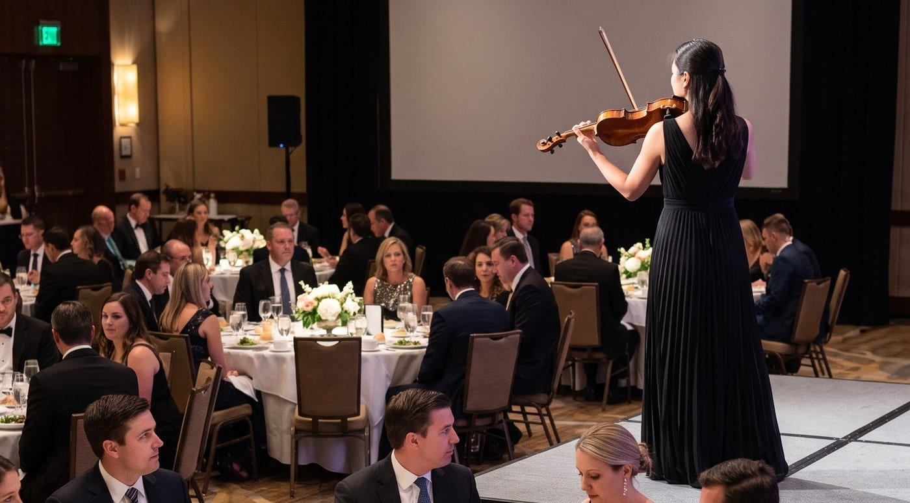

The ceremony
BOOK LIVE MUSIC IN COLORADO
Weddings
A guitar starts the processional, and everyone turns toward the bride. An hour later those same guests enjoy a jazz duo over cocktails. By the end of the night, they’re shaking it on the dance floor.
3 different jobs for the music, and one booking covers all of them.
Trusted and booked by
“Our guests couldn’t stop talking about how amazing he was, and we loved how he read the crowd and kept everyone engaged. He went above and beyond to make our day special, even learning a few of our favorite songs just for us.”
Featured Artists
wedding day music
The formats
Four sizes of musical act can cover nearly every Colorado wedding, and the guest count decides most of it.
Video clips

Send a date and you get a yes or a straight no on an act, with more details and other recommendations if you want them.
Most of a wedding’s music questions are really timing questions.
“You and your high energy wedding band absolutely killed it on our special day! … We are still getting great feedback from our guests about what an amazing job the band did and how much fun you guys are to just watch play, let alone dance the night away with!”
Questions
Whether you're planning a small ceremony or a big reception, we'll help you find the right act and make sure the sound suits your venue.